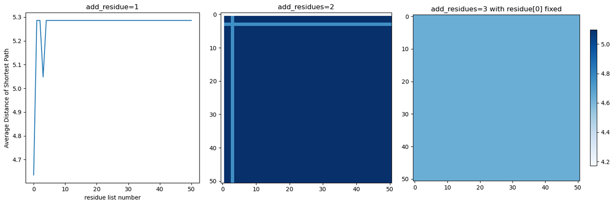

Model

This year, we used a special bio-nanomaterial derived from Geobacter metallireducens, as the "variable resistor" in our disease biomarker detection system. By detecting the changes in conductivity of the e-pili at different concentrations of the target substance and combining it with a standard curve, we can achieve quantitative detection of the target substance (To learn more: design).
在我们今年的项目中，我们将一种特殊的生物纳米材料---来源于金属还原地杆菌的Ⅳ型菌毛---作为我们的疾病标志物检测系统中的“可变电阻”，通过检测其在不同待测物浓度下的电导率变化并结合标准曲线，我们就能实现对于待测物的定量检测（To learn more：design）。
Introduction
In our system, the conductivity of the e-pili is the most important parameter. Higher conductivity allows our detection system to become more stable and accurate. Additionally, higher conductivity may also imply more possibilities for future applications of this bio-nanomaterial.
在我们的系统中，导电菌毛的电导率是最重要的一个指标。更高的电导率可以让我们的检查系统变得更加的稳定和精确。除此之外，更高的电导率还意味着更多应用的可能性。
In this section，we use optimization methods of mathematical modeling to optimize the structure of this pili to improve its conductivity.Conbing with an innovative screening method based on the microbial fuel cell system,we may eventually obtain a pili with higher conductivity.
1. Lower current thermal effect
1.更低的电流热效应：
Compared to inorganic conductive nanomaterials, an important point to note about e-pili is their chemical nature as proteins.This means that we need to consider whether they can function stably in the working environment of traditional inorganic materials.
In our system, the e-pili act as variable resistors. When current passes through the e-pili, work is done, resulting in heat proportional to the resistance of the e-pili. Since our system requires measuring the conductivity changes of the nanowires over a period of time, it implies that the e-pili will be constantly exposed to the Joule heating effect. Being protein-based materials, long-term exposure to high temperatures may cause denaturation (by using DeepSTABp tool,we estimated the melting temperature of these nanowires to be 43 degrees). This could potentially affect the stability and accuracy of the system.
相较于无机的导电纳米材料，一个值得我们注意的点是导电菌毛的化学本质是一种蛋白质，这就意味着我们需要考虑其是否能在传统的无机材料的工作环境下稳定的工作。导电菌毛在我们的系统中作为一个可变电阻，而当电流通过菌毛时，电流会做功并产生和菌毛的阻值成正比的热量。由于我们的系统需要测量菌毛在一段时间内的电导率变化曲线，这就意味着此时导电菌毛会一直处在电流热效应中。而导电菌毛作为一种蛋白质材料，长期处于较高的温度中可能会使其发生变性（我们使用DeepSTABp，简单估计了一下这种菌毛的热变性中点温度为43度），从而影响到系统的稳定性和精确程度。
2.Smoother resistance variation curve
2.更平滑的电阻变化曲线：
We have found that the resistance of e-pili with higher conductivity has a smoother curve when pH changes. The range of conductivity changes within the measured range is also greater, which may help improve the detection threshold. For example, compared to the wild-type , W51W53 (a mutant of Geobacter sulfurreducens with higher conductivity) shows a stronger linear relationship in the change of its conductivity as the external pH varies from 2.0 to 10.5 [1]. A stronger linear relationship means that we can better establish models and quantify and analyze experimental results.
我们发现，具有更高电导率的菌毛的电阻随pH的变化曲线更加的平滑，在测量范围内的电导率变化的范围也更大（可能有助于提高检测的阈值）。例如相较于野生型的硫还原地杆菌的菌毛，W51W53（一种硫还原地杆菌菌毛的突变体，具有更高的电导率）在外界的pH值从2.0到10.5的过程中其电导率的变化的线性性明显更强[1]。更强的线性性就意味着我们可以更好的建立模型以及量化和分析实验结果。
3.Further unlocking its application potential
3.进一步解放其应用潜力：
In addition to the lack of mature large-scale production techniques, one of the reasons that currently limits the application of these conductive biological nanomaterials is their conductivity compared to traditional inorganic nanomaterials such as carbon nanotubes and silicon nanotubes still at a disadvantage[1]. However, by improving the conductivity of e-pili, we can further unlock the application potential of this green biogenic nanomaterial.
除此之外，作为一种导电生物纳米材料，目前限制其投入应用的原因除了缺少成熟的大规模生产技术外，这种材料的电导率相较于传统的无机纳米材料例如碳纳米管和硅纳米管还有着一定的差距[1]。而提高菌毛的电导率毫无意味可以进一步的解放这种绿色生物纳米材料的应用潜力。
After clarifying our objectives, we extensively reviewed existing literature but found no studies related to optimizing the conductivity of e-pili.
在明确了我们要做的事情后，我们查阅了大量的资料但都没有发现和优化导电菌毛电导率相关的研究。
An idea came to our minds: since no one has done it before, let's give it a try.
一个想法出现在了我们的脑海里：既然没有别人做过，那就让我们来试试吧。
Theoretical basis
Within e-pili, there is a high density of aromatic amino acids (Figure 1). Current research suggests that the conductivity of e-pili mainly originates from the overlapping Π-Π orbitals of aromatic rings formed by the aromatic moieties of aromatic amino acid residues in their unique structure[2]. Numerous studies based on this theoretical foundation have made significant progress [1,3,4].
在导电菌毛中分布着高密度的芳香族氨基酸（图一）。目前绝大部分研究都认为，导电菌毛的电导率主要来源于其特殊结构中芳香族氨基酸残基上的芳香环形成的电子云轨道的交叠[2]。有大量基于该理论基础的研究都取得了的进展[1,3,4]。
Further consideration suggested that not only aromatic amino acid abundance, but also the position and spacing of aromatic amino acids in the pilin could be important[5]. For example, there is a stretch of 53 amino acids without an aromatic amino acid within The G. uraniireducens pilin. This aromatic-free gap might prevent close-packing of aromatic amino acids within the assembled pili. Heterologous expression in G. sulfurreducens of other type IV pilins with high aromatic amino acid abundance and smaller aromatic-free gaps yielded e-pili that appeared to be as conductive as wild-type G. sulfurreducens e-pili and functioned well in extracellular electron transfer[5].
菌毛的高分子结构拥有延长共轭双键，离域π键电子不受原子束缚，能在聚合链上自由移动，经过掺杂后，可移走电子生成空穴，或添加电子，使电子或空穴在分子链上自由移动，从而形成导电分子。
This means that if each aromatic amino acid in a sequence within the e-pili can form π-π interactions with adjacent aromatic amino acids, an effective conductive pathway is likely to form. At this point, the distance between aromatic amino acids and the rate of electron transfer exhibit a negative correlation.
这就意味着如果导电菌毛的某一串芳香族氨基酸中的每个芳香族氨基酸的芳香环均可以与其邻近的芳香族氨基酸的芳香环形成 π-π 的相互作用，则这串芳香族氨基酸就可能形成有效的导电通路。而此时芳香族氨基酸之间的距离与电子转移速率大小呈现负相关关系。
However, when the external pH changes or other molecules are adsorbed onto the surface of e-pili, the orientation and spacing of the aromatic rings of the aromatic amino acids on the surface may change due to alterations in surface charge distribution. Consequently, this leads to changes in the conductivity of e-pili.
简单的说，导电菌毛中能够形成ΠΠ堆积的芳香环越密集，菌毛的电导率越高。而当外界的pH值发生变化或导电菌毛表面吸附上其他分子的时候，导电菌毛表面的芳香族氨基酸的苯环的朝向和间距会因为表面电荷分布情况的改变而发生变化，进而改变导电菌毛的电导率。

Fig1. Schematic illustration of the principle of conductivity/electrical conductivity changes in e-pili.
Conductivity optimization model
To establish an optimization model for the conductivity of e-pili, we need to consider three basic elements of optimization separately: Decision variables, Objective function, and Constraints.
要建立导电菌毛的电导率最优化模型，我们需要分别考虑最优化类模型的三个基本要素：决策变量，目标函数和约束条件。
Decision variables
The decision variables are factors that decision-makers can control.
In this model, the variables we can control are the amino acid sequences of the e-pili. By changing the
types and positions of amino acids in the sequence, we can attempt to alter the overall conductivity of
the pili. The most critical indicator affecting pili conductivity is the spacing of Π residues (aromatic
amino acids capable of producing Π-Π interactions). There are two methods to modify this spacing:
决策变量是决策者可以控制的因素。
在这个模型中，我们能控制的变量是金属还原地杆菌的导电菌毛的氨基酸序列。我们可以通过改变序列中的氨基酸的种类和位置来尝试改变整体菌毛的电导率。影响菌毛电导率的最核心的指标是其中Π残基（能够产生ΠΠ相互作用的芳香族氨基酸称作Π残基）的间距。而改变其间距的方法有以下两种：
1.Altering the quantity and position of aromatic amino acids within e-pili.
1.改变导电菌毛内芳香族氨基酸的数量和位置

Fig2. Alterations in the quantity and position of aromatic amino acids within the e-pili.
The quantity and positioning of aromatic amino acids within the e-pili are important factors determining their conductivity. For example, in comparison to the wild type G. sulfurreducens's e-pili, a mutant variant Y27A exhibits less than one-fifth of the conductivity. This is because in Y27A, tyrosine, an aromatic amino acid, is replaced by alanine, a non-aromatic amino acid, leading to an increased spacing between the Π residues in that specific region. This alteration impacts the transfer of electrons, resulting in reduced conductivity.
芳香族氨基酸的在导电菌毛内部的数量和位置是决定其电导率的一个重要原因。例如相较于野生型的硫还原地杆菌的菌毛，其突变体Y27A的电导率只有其不到5分之一。这是因为Y27A用一个丙氨酸代替了芳香族氨基酸酪氨酸，使得局部的Π残基之间的间距变大，影响到了电子的传递。
2. Modifying the type of amino acids to alter the overall hydrophilicity and hydrophobicity of the e-pili:
2.改变氨基酸的种类以改变整个菌毛亲疏水性：

Fig3. Impact of amino acid type alteration on the electrical conductivity of e-pili.
In addition, the hydrophobicity of amino acids in the e-pili can also influence the overall structure and spacing of Π residues within the e-pili. For instance, in the mutant W51W57, replacing the phenylalanine and tyrosine at the c-terminal of the pili with tryptophan enhances the hydrophobicity of the pili and reduces the diameter of the pili. This results in a more compact structure, leading to a reduction in the spacing between internal Π residues. As a result, the conductivity of W51W57 has been shown to be approximately 2000 times higher than that of the wild type in some studies[6].
除此之外，导电菌毛中氨基酸的亲疏水性可以影响到菌毛的整体结构从而导致内部的Π残基间距发生变化。例如在突变体W51W57中，通过用色氨酸替代导电菌毛羧基端的苯丙氨酸和酪氨酸，使得组装后菌毛的疏水性增强，菌毛的直径也变得更小。此时导电菌毛的结构变得更加紧凑，内部Π残基的间距也明显减小。这使得W51W57的电导率在一些研究中比野生型的电导率提高了大约2000倍[6]。
Due to the complexity of the structural model for type IV pili assembly and the lack of suitable methods to predict the impact of hydrophobicity changes in individual pili subunits on the overall assembled pili structure, our focus in this model is primarily on method one: understanding the impact of introducing new aromatic amino acids or altering the positions of existing aromatic amino acids on the pili conductivity.
由于Ⅳ型菌毛的结构模型构建相对复杂，且目前我们也没有找到合适的方法来预测菌毛单体的疏水性变化对于整个组装后菌毛结构的影响。在本模型中我们主要关注方法一:即增加新的芳香族氨基酸或者改变原有芳香族氨基酸的位置对于菌毛电导率的影响。
Furthermore, it's worth noting that the assembly of e-pili requires a complex and conserved type IV pilus assembly system. This assembly system has certain requirements for the conservation of amino acid sequences within the pili[7]. Modifying too many amino acids may not only result in the collapse of the original pili structure but also prevent proper assembly within cells.
除此之外，值得注意的是，金属还原地杆菌的导电菌毛需要一套复杂且保守的Ⅳ型菌毛组装系统来进行组装。而这套组装系统对于菌毛的氨基酸序列的保守性是有一定的要求的。如果修改的氨基酸过多不仅可能会导致原有菌毛结构的崩溃还可能导致其无法在工程菌体内正确组装。
This implies that our algorithm needs to find the optimal modification strategy under the constraint of minimizing the number of modifications required.
这就意味着我们的算法需要能够在使用最少修改次数的条件下找到此时的最优修改方案。
Objective function
The objective function is a function used to describe the goals pursued by decision-makers.
目标函数是用于描述决策者所追求的目标的函数。
In our model, our ultimate goal is to obtain e-pili with higher conductivity characteristics. The conductivity characteristics of the e-pili are closely related to the distance between the centroid of the aromatic ring on the aromatic amino acid residues.
在我们的模型中，我们最终的目标是得到具有更高的电导率特性的导电菌毛。而导电菌毛的电导率特性和其中芳香族氨基酸残基上的芳香环的质心之间的间距息息相关。
Based on this theory, we have designed the following two objective functions:
基于这个理论，我们设计了如下两个目标函数：
1. Average distance between the centroid of aromatic rings of Π residues on the shortest electron transfer chain in e-pili:
1.导电菌毛中最短电子传递链上的Π残基芳香环质心平均间距：

Fig4. Schematic representation of the shortest electron transfer chain.
This objective function is used to describe the maximum conductivity of conductive pili under ideal conditions.
该目标函数用于描述在理想状态下导电菌毛的最高电导率。
We can assume that in an ideal state, electrons will move along the shortest propagation path composed of Π residues in e-pili. At this point, the conductive pili has the highest conductivity within this structure.
我们可以认为在理想状态下电子会沿着导电菌毛中由Π残基构成的最短传播路径移动。此时导电菌毛具有该结构下的最高的电导率。该函数描述了给定结构条件下菌毛电导率的上限。以该函数为目标的优化可以让我们得到具有更高电导率的菌毛。
within this structure. This function describes the upper limit of the conductivity of pili under given structural conditions. Optimization based on this objective function may help us obtain the pili with higher conductivity.
2.Average length between neighboring nodes of the Minimum Spanning Tree for all Π residues.
2.所有Π残基节点最小生成树中的相邻节点平均间距：

Fig5. Schematic illustration of the minimum aromatic amino acid node spanning tree.
This objective function is used to describe the overall conductivity of e-pili under the influence of external environmental factors.
该目标函数用于描述在受外界环境影响的条件下导电菌毛的综合电导率。
Under the influence of environmental factors such as pH changes or surface adsorption, other aromatic amino acids in e-pili, beyond the original shortest electron propagation path, may also participate in the electron transfer process as the structure of the e-pili changes.
在环境因素（例如pH变化或者表面吸附）的影响下导电菌毛中原有的最短电子传播路径之外的其他芳香族氨基酸也可能随着菌毛结构的变化参与到电子传递的过程中。该目标函数描述了所有菌毛内部的Π残基之间的间隔情况，可以反应在不同环境因素影响下菌毛的综合导电能力。以该函数为目标的优化可能使得我们的菌毛在不同环境条件下的电导率表现更好，电导率曲线也可能变得更加平滑。
This objective function describes the spacing between all Π residues inside the pili, reflecting the overall conductivity of the pili under different environmental influences. Optimization based on this objective function may improve the conductivity performance of our pili under different environmental conditions and make the conductivity curve smoother.
Constraints
Constraints are the limitations that decision variables must satisfy.
约束条件是决策变量需要满足的限定条件。
In this model, the constraints are the possible coordinates of the centroid of aromatic rings in aromatic amino acids. All decision variables (the added aromatic amino acids) can only occur at specific positions determined by the structure of e-pili themselves.
Since we only focus on the changes in conductivity caused by the quantity and position of aromatic amino acids , we can initially assume that adding or modifying a small number of aromatic amino acids has minimal impact on the overall structure of the e-pili. This means that we do not need to rebuild the molecular dynamics model for each iteration. Instead, we can use the spatial coordinate information of the original structure to roughly determine the range of the centroid coordinates for the new aromatic rings.
在本模型中，约束条件是芳香族氨基酸的芳香环质心的可能坐标，所有的决策变量（新增的芳香族氨基酸）都只能出现在由导电菌毛结构本身决定的特定位置上。由于我们在本模型中我们只讨论芳香族氨基酸的数量和位置对于其电导率的影响（思路一），在此我们可以先假设添加或修改少量芳香族氨基酸对于菌毛整体结构的影响不大，这就意味着我们不需要每进行一次迭代就需要重新完成一遍分子动力学模型的构建，而是可以用原有结构的分子空间坐标信息来大致给出新的芳香环的质心坐标的范围。
In our model, we approximate the centroid coordinates of the newly added aromatic ring by using the average coordinates of all carbon atoms in the side chain at the modified position.
在我们的模型中，我们用所改动位置侧链上所有碳原子的平均坐标来近似预测新增的芳香环的质心坐标。
Since the purpose of constructing this model is to discover potential mutation sites, we can combine the semi-rational directed evolution method to screen and obtain the actual optimal results. Therefore, the accuracy requirement for this model is not as strict as that of rational protein design.
由于本模型的构建旨在发掘可能的突变位点，我们可以结合蛋白质半理性定向进化的方法来筛选得到实际的最优结果，故本模型中对于模型精度的要求并不如蛋白质理性设计那样严格。
Since the purpose of constructing this model is to discover potential mutation sites, we can combine the semi-rational directed evolution method to screen and obtain the actual optimal results. Therefore, the accuracy requirement for this model is not as strict as that of rational protein design.
由于本模型的构建旨在发掘可能的突变位点，我们可以结合蛋白质半理性定向进化的方法来筛选得到实际的最优结果，故本模型中对于模型精度的要求并不如蛋白质理性设计那样严格。
Model Overview

Molecular Dynamics Simulations
Common methods to obtain pili protein structure include nuclear magnetic resonance imaging, X-ray technology and homology prediction. These methods have some problems such as static snapshot, signal interference and atomic position conflict. And when we use spiral symmetric assembly for pili monomers, it is easy to overlook the flexibility of subunits. Therefore, we first use amber23 for molecular dynamics optimization of the subunits, and then use Rosetta for helical symmetric assembly of the optimized subunits with fuzzy constraints. To eliminate the effects of rigid docking, molecular dynamics simulation (amber23) was used again to optimize the pili assembly structure to obtain the best pili polymer structure. Finally, pymol was used to further verify the obtained pili structure, including distance and electron transport chain. The use of molecular dynamics to optimize the assembly process has obvious advantages: the protein is simulated in a real biological environment and the dynamic effects of the organism are taken into account. Molecular dynamics simulation (MD) can be used to optimize the structure of pili proteins and annotate the structural details.
通常获得菌毛蛋白结构方法包括：核磁共振成像，X 射线技术和同源预测等。这些方法存在静态快照、信号干扰和原子位置冲突等问题。并且我们对于菌毛单体使用螺旋对称组装时，容易忽视亚基的柔性。所以，我们首先使用amber23对于亚基进行分子动力学优化，再使用Rosetta对优化后的亚基进行增加了模糊条件约束的螺旋对称组装。为了消除刚性对接的影响，我们再次运用分子动力学模拟(amber23）优化菌毛组装结构以获得最佳的菌毛聚合物结构。最终，使用pymol对于得到的菌毛结构进行进一步的验证，包括距离、电子传递链等。使用分子动力学去优化组装的过程是有很明显的优势：蛋白模拟在一个真实的生物学环境以及考虑了生物体的动力学效应。运用分子动力学模拟（MD)，可以优化菌毛蛋白的结构和注释结构细节。

Optimization Design
The determination of the e-pili structure implies the establishment of constraints in our optimization model. Next, we will design corresponding optimization functions for the optimization objectives we previously proposed and use algorithms to optimize each of them separately.
菌毛结构的确定意味着我们优化算法中的约束条件也随之确定，接下来我们要针对我们之前提出的优化的目标分别设计对应的优化函数，并使用算法分别进行优化。
Graph structure construction
We create a new data class for pi-residues to store all their information, with the average of the x, y, and z coordinates of all the carbon atoms in each pi-residue as its center-of-mass coordinates in the three-dimensional space. We then construct a graph with each pi-residue as a vertex and obtain the corresponding adjacency and distance matrices based on the center-of-mass coordinates. Among them, we set a value k to constrain that only pi-residues with a distance less than k are capable of transferring electrons, otherwise, we set their adjacency value to 0 and their distance to infinity.
我们首先创建新的数据结构并储存了全部的pi残基信息，将每个pi残基中碳原子x，y，z轴坐标的平均值视为该pi残基在三维空间中的质心坐标。我们将得到的pi残基结构视为以每一个pi残基为顶点的“图”，并基于所求的质心坐标得到相应的邻接矩阵和距离矩阵。其中，我们认为只有两个距离小于k的pi残基才是可以完成电子传递的，否则，我们设定其邻接值为0，距离为无穷。
For Objective function One
Our first optimization target is the average distance between the centroids of Π-residue aromatic rings on the shortest electron transfer chain in e-pili. This optimization target is used to describe the highest electrical conductivity of conductive pili under ideal conditions. To obtain the shortest electron transfer chain within the e-pili, we can view the network composed of Π-residue（aromatic amino acids capable of forming π-π interactions）nodes as a map and use an algorithm for identifying the shortest paths between nodes in the map to explore possible electron transfer pathways within a series of models.
我们的第一个优化目标是导电菌毛中最短电子传递链上的Π-残基芳香环质心之间的平均间距，这一优化目标用于描述导电菌毛在理想条件下的最高电导率。为了获得菌毛内部的最短的电子传递链，我们可以将由Π-残基节点构成的网络看作是一张地图，并使用用于识别地图中各节点之间最短路径的算法来探索一系列的模型中存在的可能的电子传递路径。
The Dijkstra algorithm is a commonly used graph search and shortest path algorithm in computer science and mathematics. This algorithm aims to find the shortest paths between a starting node (or vertex) and all other nodes in a weighted graph, where each edge has an associated numerical weight or cost.
Dijkstra算法是计算机科学和数学中常用的图搜索和最短路径算法。该算法旨在找到加权图中起始节点（或顶点）与所有其他节点之间的最短路径，其中每条边都有与其相关的数字权重或代价。
Based on the Dijkstra algorithm, we have designed an algorithm that can search for possible shortest electron transfer chains within the e-pili. This algorithm consists of three steps: (1) Identifying Π-residues；(2) extracting the coordinates of Π-residues；(3) calculating the distances between Π-residues and searching and comparing to determine the shortest path.
我们基于Dijkstra 算法设计了一套可以搜索菌毛内部可能的最短电子传递链的算法，该算法由三个步骤组成：（1）识别 π-残基（能够形成 π-π 相互作用的芳香族氨基酸）（2）提取π-残基的坐标（3）计算π-残基之间的距离并搜索并比较得出最短路径。
Inputs:
Source node, Target node, Distance matrix, Adjacency matrix
Initialization:
Distance array: An array of distances from the source node, initialized as follows:
Set the distance from the source node to itself (dist(source)) to 0.
Set the distance from all other nodes (v) to infinity (∞) for nodes v not equal to the source node.
Q: A queue of all nodes in the graph.
S: An empty set to indicate which nodes the algorithm has visited.
Proceeding:
While queue Q is not empty, follow these steps:
Step1:
Pop the node v from the queue Q that is not already in set S and has the smallest dist(v) value.
Step2:
Add node v to set S to indicate that it has been visited.
Step3:
Update the dist values of adjacent nodes of the current node v as follows:
For each new adjacent node u, if dist(v) + Distance_matrix[u, v] < dist(u), then update dist(u) to the new minimal value.
The algorithm stops after the target node is visited.
For Objective function Two
Our second optimization objective is the average distance between adjacent nodes in the minimum spanning tree formed by all Π-residue nodes. This optimization objective is used to describe the comprehensive conductivity of e-pili under the influence of the external environment. Similar to the approach for the first optimization objective, we only need to find the minimum spanning tree within the map composed of Π-residue nodes, and then we can obtain the required value by summing the weights of the edges in this tree and dividing it by the number of nodes.
我们的第二个优化目标是由所有的Π残基节点构成的最小生成树中的相邻节点的平均间距，该优化目标用于描述受外界环境影响的条件下的导电菌毛的综合电导率。和第一个优化目标的处理方法类似，我们只用求解出由Π残基构成的地图中由各个结点构成的地图中的最小生成树，并将该生成树的中的权值之和除以节点数我们就能得到我们需要的值。
Prim's Algorithm
We use Prim's algorithm here to solve this problem. Prim's algorithm is a well-known algorithm used in computer science and graph theory to find the minimum spanning tree of a connected, undirected graph with weighted edges. The algorithm starts with an initial node and then grows the minimum spanning tree one edge at a time until all nodes are included while minimizing the total edge weight.
我们在此使用Prim算法来解决问题，Prim算法是计算机科学和图论中使用的一种著名算法，用于寻找具有加权边的连通无向图的最小生成树。该算法从一个初始节点开始，然后一次一条边增长最小生成树，直到所有节点都被包括在内，同时最小化总边权重。
Inputs:
Distance matrix
Initialization:
An arbitrary starting node.
MST: Initialize an empty set to represent the Minimum Spanning Tree (MST).
Key array: Create an array to keep track of the minimum edge weight from each node to the MST. Initialize all values with infinity except for the starting node, which is set to 0.
Visited array: Create an array to keep track of visited nodes. Initialize all values to false.
Proceeding:
While the MST set does not include all nodes, follow these steps:
Step1:
Select a node (u) that is not yet in the MST but has the minimum key value.
Step2:
Add node (u) to the MST set.
Step3:
Update key values: For each node v adjacent to the newly added node u, if Distance_matrix[u,v] < Key(v), update the Key(v) with the new weight.
Note:
As a tree structure satisfies:
Number of edges = Number of nodes - 1
The final objective function is obtained from:
(Total length of the MST) / (Number of nodes - 1).
Particle Swarm Optimization
Particle Swarm Optimization (PSO) is an optimization algorithm based on swarm intelligence, which simulates the behavior of biological swarms, such as flocks of birds or schools of fish, in their search for food or resources.
粒子群优化算法（Particle Swarm Optimization，简称PSO）是一种基于群体智能的优化算法，它模拟了鸟群或鱼群等生物群体在搜索食物或资源时的行为，通过个体之间的协作和信息共享来寻找最优解。
Particle Swarm Optimization (PSO) can be described as follows: Suppose the search space is L-dimensional and there are N particles in the population. The ith particle in the population can be represented as an L-dimensional vector \(X_i=(x_{i1},x_{i2},\cdots , x_{il})\), and the best position it experiences is denoted as \(P_{best}=(p_{1},p_{2},\cdots , p_{l})\).Each position of the particle represents a potential solution to the requirement, which is substituted into the objective function to obtain its fitness value. The optimal position searched so far by the whole population is denoted as \(G_{best}=(g_{1},g_{2},\cdots , g_{l})\).
粒子群优化（PSO）可以描述如下：假设搜索空间是 \(L\) 维的，群体中有 \(N\) 个粒子。群体中的第 \(i\) 个粒子可以表示为一个 \(L\) 维向量 \(X_i=(x_{i1},x_{i2},\cdots , x_{il})\)，它经历的最佳位置表示为 \(P_{best}=(p_{1},p_{2},\cdots , p_{l})\)。粒子的每个位置代表一个潜在的解决方案，代入目标函数得到其适应值。整个群体迄今为止搜索到的最佳位置表示为 \(G_{best}=(g_{1},g_{2},\cdots , g_{l})\)。
Next, we do the following iterations for each particle in the population : $$V_i^{(t+1)} = \omega·V_i^{(t)} + c_1r_1(P_{best}^{(t)} - X_i^{(t)}) + c_2r_2(G_{best}^{(t)} - X_i^{(t)})$$ $$X_i^{(t+1)} = X_i{(t)}+V_i{(t+1)}$$
接下来，我们对群体中的每个粒子进行以下迭代：\[V_i^{(t+1)} = \omega V_i^{(t)} + c_1r_1(P_{best}^{(t)} - X_i^{(t)}) + c_2r_2(G_{best}^{(t)} - X_i^{(t)})\] \[X_i^{(t+1)} = X_i^{(t)}+V_i^{(t+1)}\]
The above formula consists of three parts. The first part is the current speed of the particle, with the positive value \(\omega\) being the Inertia Weight, which indicates the current state of the particle. The second part is the Cognition Modal, which indicates the cognition of this generation of particles about their own state (\(c_1\) is Self-recognition Factor). The third part is the Social Modal, which indicates the sharing of information between particles through generations (\(c_2\) is Social-recognition Factor).
上述公式由三部分组成。第一部分是粒子的当前速度，正值 \(\omega\) 是惯性权重，表示粒子的当前状态。第二部分是认知模式，表示这一代粒子对自己状态的认知（\(c_1\) 是自我识别因子）。第三部分是社交模式，表示粒子之间通过代代相传的信息共享（\(c_2\) 是社交识别因子）。
Discrete Mapping
In the optimization process, we defined the independent variable as the sequence number of regular residues in a monomer that needs to be adjusted to pi-residues. Suppose there are \(N\) non-pi residues in each monomer and the number that needs to be changed to pi-residues in each monomer is \(d\), then our independent variable X can be denoted as \[X=(x_1,x_2,\cdots x_d), x_i \in \{1,2,\cdots N\}\] Before performing the optimization, we sorted all the residue sequences of each monomer according to their L1 norm from the origin to ensure that the spatial distances of residues with similar sequence numbers are also relatively closer spatially, ensuring sequence numbers and the geometrical positions are consistent with each other. However, APSO still deals with only the continuous problem, so we need to discretize the continuous particles \(Y=(y_1,y_2,\cdots y_d), y_i \in [0,1]\) to correspond to the sequence number of residues in each monomer. The method we use is to stick to the continuous optimization in the interval [0, 1] and divide [0, 1] into \(N\) equally spaced sub-intervals of length \(\frac{1}{N}\). Therefore, we can map \(Y\) to \(X\) one on one by letting \(x_i=[y_i \times N]\), which means keeping the integer part of \(Ny_i\).
在优化过程中，我们将独立变量定义为需要调整为π残基的单体中的常规残基的序列号。假设每个单体中有\(N\)个非π残基，每个单体中需要改变为π残基的数量是\(d\)，那么我们的独立变量X可以表示为 \[X=(x_1,x_2,\cdots x_d), x_i \in \{1,2,\cdots N\}\] 在进行优化之前，我们根据它们从原点的L1范数对每个单体的所有残基序列进行了排序，以确保具有相似序列号的残基的空间距离也在空间上相对较近，确保序列号和几何位置彼此一致。然而，APSO仍然只处理连续问题，所以我们需要将连续粒子\(Y=(y_1,y_2,\cdots y_d), y_i \in [0,1]\)离散化，以对应于每个单体中的残基的序列号。我们使用的方法是坚持在区间[0, 1]中的连续优化，并将[0, 1]划分为\(N\)个等间距的子区间，长度为\(\frac{1}{N}\)。因此，我们可以通过让\(x_i=[y_i \times N]\)将\(Y\)一对一地映射到\(X\)，这意味着保持\(Ny_i\)的整数部分。
APSO makes three main improvements on the basis of PSO:
1.Evolutionary State Estimation
ESE calculates the distributional information of the population of each generation in the space of independent variables. We first calculate the average Euclidean distance from particle \(i\) to all the other particles.

Accordingly, we define the Evolutionary Factor \(f\) that measures the optimizing state of the population:
\[f=\frac{d_g-d_{min}}{d_{max}-d_{min}} \in [0,1]\]
The Evolutionary factor we calculated above can help to decide which evolutionary state the population is in. The different evolutionary states of the population affect our different adaptive control strategies for the parameters (here we are referring to \(\omega, c_1, c_2\)). We apply the obtained \(f\) to define four different evolutionary states \(S_1,S_2,S_3,S_4\) and their fuzzy membership function, representing the states of exploration, exploitation, convergence, and jumping out respectively.

2.Parameters self-adaptive control strategy
We use a sigmoid mapping to allow \( \omega \) to change with the Evolutionary factor \( f \)
\[ \omega(f)=\frac{1}{1+1.5e^{-2.6f}} \in [0.4,0.9] \]
We know \( \omega(f) \) is a monotonically increasing function. Therefore, a larger \( f \) in \( S_1 \) and \( S_4 \) will result in a larger value of \( \omega \), which facilitates a global search. On the contrary, \( S_2 \) and \( S_3 \) are more suitable for a local search.
\( c_1 \) represents self-recognition factor, which pulls the particles to their own historical optimal position; \( c_2 \) represents social-recognition factor, which pushes the population to converge to the current global optimal region and helps fast convergence. These coefficients are initialized to 2.0 and are adaptively controlled according to the evolutionary state with the following strategies:
(1)\( S_1 \) - Increase \( c_1 \) and decrease \( c_2 \) in the exploration state, which helps particles to explore individually and achieve their own historical optimal positions, rather than crowding around the current best particles that may be associated with the local optimum.
(2)\( S_2 \) - Slightly increase \( c_1 \) and slightly decrease \( c_2 \) in the exploitation state.
(3)\( S_3 \) - Slightly increase \( c_1 \) and slightly increase \( c_2 \) in the convergence state.
(4)\( S_4 \) - Decrease \( c_1 \) and increase \( c_2 \) in the jumping-out state.
3.Elitist Learning Stratrgy
The jumping out effect done by the ELS mechanism on \( G_{best} \) is necessary for the global optimal nature of this algorithm, which randomly selects a dimension of \( G_{best} \), which is represented by the \( g_d \) of the dth dimension:
\[ g_d = g_d + (X_d^{max} - X_d^{min})\cdot Gaussian(\mu,\sigma^2) \]
APSO's adaptive tuning of parameters can improve the performance of the PSO algorithm in terms of both accelerated convergence and global search. In addition, its ELS strategy will maintain the diversity of the population in order to allow the algorithm to jump out of potential local optima.
Optimization Results
We can observe that adding new aromatic amino acids can significantly optimize both our objective functions one and two.
我们可以观察到，添加新的芳香族氨基酸可以显著的优化我们的目标函数一和目标函数二。
In objective function one , we found that replacing serine with aromatic amino acids at position 2 of the original amino acid sequence of the e-pili can reduce the average distance in objective one from 4.72 Å to 4.63Å. Furthermore, we found that adding more aromatic amino acids on top of this does not further reduce this distance. In objective one, we can consider that the electrical conductivity of this mutant has reached its optimal point.
在目标函数一中，我们发现在导电菌毛原有氨基酸序列的2号位将苏氨酸替换成芳香族氨基酸可以将优化目标一中的平均间距从优化前的4.72埃降低到了4.63埃。且我们发现在此基础上加入更多的芳香族氨基酸不会再降低该间距，在优化目标一中，我们可以认为该突变体此时的电导率已经无法再被优化。
To verify the accuracy of the results, we attempted to iterate through all possible spacing scenarios for adding 1, 2, and 3 pi-residues (Fig. 7) and found that only the modification at position 2 changes the original shortest electron transfer pathway, and adding more aromatic amino acids does not alter this result.
为了验证结果的准确性，我们尝试遍历了添加1，2，3个Π残基所有可能的间距情况(Fig.7)，发现只有二号位的修改会改变原有的最短电子传递路径，且添加更多的芳香族氨基酸也不会改变该结果。
In objective function two , because the objective function we chose is used to describe the distribution density of aromatic rings within the e-pili, this means that adding 1 or 2 pi-residues cannot yield an optimal result. Therefore, we started considering the addition of three Π-residues, as shown in Fig. 6. Adding 5 aromatic amino acids can reduce the original spacing from 7.6 Å to less than 5.5 Å.
在目标函数二中 ，由于我们所选用的目标函数用于描述导电菌毛内部芳香环的分布密度，这就意味着添加1，2个Π残基不可能出现最优结果。于是我们从添加三个Π残基开始考虑，结果如Fig6所示。添加5个芳香族氨基酸便可以将原有的间距从7.6埃优化到不到5.5埃。


Fig.6 Optimization Results.
Fig.7 Traversal results after adding 1, 2, and 3 Π-residues (where the x-axis represents the index of the list composed of non-aromatic amino acids, for example, list[0] corresponds to the residue at position 2).
Model Evaluation
Based on the optimization results from the model described above, we reconstructed the structural models for single point mutants T2F and triple point mutants A31F, Q53F, and N59F to validate our conclusions:
基于上述模型优化结果，我们重新构建了点突变体T2F和A31F，Q53F，N59F三位点突变体的结构模型来验证我们的结论：
In optimization objective one, we replaced the threonine at position 2 of the wild-type metal-reducing rod bacterium pilin amino acid sequence with phenylalanine. We only selected the shortest electron transfer path in the pilus structure obtained by the Dijkstra algorithm (where the original aromatic rings are marked in red, and the newly added aromatic rings in mutant T2F are marked in yellow). The results are as follows: We observed several gaps in the electron transfer chain obtained by the algorithm, which is because the pilin monomers providing the aromatic rings for these gaps are not in our model. We counted the distances between the aromatic amino acids on the electron transfer chains inside the original wild-type pilus and the mutant pilus. We found that the newly added aromatic amino acids changed the original electron transfer chain to (F1p, Y27p+4, F24p+4) (electrons are transferred from position 1 of the first monomer to positions 27 and 24 of the fifth monomer, and finally to position 1 of the second monomer to complete the cycle), where the centroid distances between adjacent aromatic rings are (4.6 Å, 5.5 Å, 4.1 Å). In the mutant, according to our model prediction, the electron transfer chain would change to (F2p, Y27p+4, F24p+4). However, we can clearly observe that the centroid distance between the aromatic rings in the electron transfer chain of this mutant is significantly larger than that of the wild type, with distances of (7.1 Å, 5.5 Å, 9.5 Å).
在优化目标一中 ，我们将野生型金属还原地杆菌菌毛氨基酸序列上的2号位的苏氨酸替换成苯丙氨酸。我们只选中菌毛结构中的由Dijkstra算法得到的最短电子传递路径（其中原有的芳香环用红色标记，突变体T2F新增的芳香环用黄色标记）可以得到以下结果。
我们可以发现由算法得到的电子传递链中存在若干缺口，这是由于提供缺口部分的芳香环的菌毛单体并不在我们的模型中。我们统计了原有的野生型菌毛和突变体菌毛内部的电子传递链和链上芳香族氨基酸的间距。我们可以发现新增的芳香族氨基酸将原有的电子传递链为（F1p，Y27p+4，F24p+4)（电子从第一个单体的1号位传递到第5个单体的27号位和24号位，最终传递给第二个单体的一号位实现循环）其中相邻芳香环的质心间距为（4.6埃，5.5埃，4.1埃）。而在突变体中，按照我们的模型预测的结果，电子传递链会变成（F2p，Y27p+4，F24p+4）。但我们可以明显的观察到，该突变体的电子传递链中芳香环质心间距较野生型明显变大，间距为（7.1埃，5.5埃，9.5埃）。
This situation arose because, when determining the constraint conditions of the decision variables in the optimization model, to simplify the model, we used the average coordinates of all carbon atoms on the side chain of the modified position to approximately predict the centroid coordinates of the newly added aromatic ring. The error caused by simplifying the model ultimately led to incorrect optimization results.
这种情况的出现是因为我们在确定优化模型中决策变量的约束条件的时候，为了简化模型，使用了所改动位置侧链上所有碳原子的平均坐标来近似预测新增的芳香环的质心坐标。简化模型导致的误差最终使得我们得到了错误的优化结果。
This model illustrates that objective function one can no longer be optimized by adding new aromatic amino acids to the original amino acid sequence. Subsequent teams may try to optimize by changing the type of aromatic amino acids to affect the overall hydrophilicity and hydrophobicity of the pilus.
这一模型可以很好的说明目标函数一已经无法通过在原有氨基酸的序列上添加新的芳香族氨基酸来进行优化。后续的团队可以尝试使用改变芳香族氨基酸的种类影响整体菌毛的亲疏水性这一思路来进行优化。

Fig.8 The comparison in electron transport chain between the WT（yellow）and the T2F（orange）
In objective function twowe added 3, 4, and 5 phenylalanine residues at the positions calculated by our optimization algorithm, respectively, on top of the original structure. We can intuitively observe that the introduction of aromatic amino acids significantly improves the uniform distribution of aromatic amino acids in the original pili structure, causing the core of electron transfer to spread outward from the pili's central axis. This means that when the structure of conductive pili changes under the influence of different environmental factors, there are more aromatic rings involved in the electron transfer process, potentially leading to an increase in the overall electrical conductivity of the pili.
在优化目标二中 我们分别在原有的结构基础上，在由我们的优化算法计算得到的位点上分别加入3，4，5个苯丙氨酸。我们可以非常直观的发现加入的芳香族氨基酸明显提高了原有菌毛结构中的芳香族氨基酸的分布的均匀度，使得电子传递的核心从菌毛的中轴开始向外扩散。这就意味着此时的导电菌毛在不同环境因素影响下结构发生变化时，菌毛中有更多的芳香环可能参与到电子传递的过程中，这就意味着菌毛的综合电导率可能会增加。

Fig 9.Optimization results of objective function 2
Semi-rational Directed Evolution
To reduce the computational workload in modeling, a common practice is to simplify the model by introducing assumptions. For example, when determining constraints for optimizing, we approximate the centroid coordinates of the newly added aromatic ring by using the average coordinates of all atoms in the side chain at the modified position.However, introducing assumptions means that our model can not achieve the level of precision required in rational protein design. We can only identify several potential mutation sites, and we cannot guarantee that the final structure of the pili and the internal electron transfer will conform to our design.
为了减少建模的任务量，一个非常常见的做法就是通过引入假设来简化模型，例如我们在确定优化模型的约束条件时用侧链上所有原子的平均坐标来近似预测新增的芳香环的质心坐标。但引入假设就意味着我们的模型没有办法做到和蛋白质的理性设计中要求的精确程度。我们只能确定若干个可能的突变位点，并无法保证最终菌毛的结构以及内部的电子传递情况会符合我们的设计。
This situation is quite common in protein structure optimization, and the most common solution to address this is to use a non-rational (high-throughput screening) approach to compensate for the shortcomings of rational design.
这种情况在蛋白质的结构优化中是非常常见的，而应对这种情况的最常见的方案就是使用一种非理性（高通量的筛选）的方法来弥补掉理性设计上的不足。
Directed evolution simulates the process of Darwinian evolution in the laboratory by creating a large number of mutants through random mutation and recombination. Specific selection pressures are applied for desired features, allowing the selection of proteins with desired characteristics, achieving molecular-level simulated evolution.
定向进化是在实验室中模拟达尔文进化过程,通过随机突变和重组,人为制造大量的突变体,按照特定的需要和目的给予选择压力,筛选出具有期望特征的蛋白质,实现分子水平的模拟进化。”
Among the various methods of directed evolution, semi-rational directed evolution is the most widely applied with the most successful cases. This method aims to mutate proteins based on some understanding of their physicochemical properties, three-dimensional structure, structure-activity relationships, catalytic mechanisms, etc. With the assistance of computers, it then uses a reasonable high-throughput screening method to quickly obtain the target mutants.
而在定向进化的诸多方法中，半理性定向进化应用最广泛，成功案例最多。该方法旨在对蛋白的理化性质、三维结构、构效关系、催化机理等信息有一定理解的基础上，在计算机辅助下，对蛋白进行突变，并利用合理的高通量筛选方法，以快速获得目标突变体。
In our project, after identifying potential sites that may enhance the electrical conductivity of the pili, the next step is to construct a mutant library with these sites as hotspots and perform screening using the aforementioned methods. In our original plan, we intended to express and purify the mutants from the library one by one in engineered bacteria to measure their electrical conductivity. However, we quickly realized that this approach was too inefficient. Additionally, due to the relative conservation in the assembly of Type IV pili, a significant portion of mutant pili may fail to assemble correctly and lose their conductive function. Screening these pili would consume a considerable amount of effort.
在我们的项目中，在确定了可能提高菌毛的电导率的位点后，接下来我们需要以上述位点为突变热点构建突变体库，并使用一定的方法进行筛选。在我们原先的方案，我们准备将构建出的突变体库一个一个的在工程菌中表达并分离和纯化以测量其电导率。我们很快就发现这种方法的效率太低了，且由于四型菌毛组装的相对保守性，可能会有相当一部分的突变体菌毛是无法正确组装而失去导电功能的，对于这部分菌毛的筛选会浪费我们大量精力。
We plan to leverage the original function of e-pili, using Geobacter sulfurreducens as a chassis organism and combining it with the improved H-type microbial fuel cell model previously developed by previous researchers[8,9]. This bioelectrochemical system will be used for the initial screening of pili with higher electrical conductivity by observing the maximum current generated by the strains in microbial fuel cells.
我们准备从导电菌毛的本来的功能入手，以硫还原地杆菌作为底盘，结合研究者此前改进的H 型燃料电池模型[8,9]，搭建生物电化学系统通过观察菌株在微生物燃料电池中的最大电流来初步筛选具有更高电导率的菌毛。 电池中使用石墨电极，使用稳压器保证阳极电势，电池阳极和阴极之间连接电阻。细胞被接种到阳极之后，在含有10mM 的乙酸钠（电子供体）和 40mM 延胡索酸钠（电子受体）的 freshwater培养基中生长。

Fig10.The Microbial Fuel Cell Model
Future work
To validate our design, we still need to measure the electrical conductivity of individual pili. However, due to project timelines and the unavailability of the necessary equipment (low-noise nanoelectrode measurement platform and atomic force microscope [10]), it is regrettable that we won't be able to experimentally verify our modeling results this year.
要验证我们的设计，我们最终仍然需要测量单根菌毛的电导率，然而受限于项目的周期以及我们无法获得相关的仪器设备（低噪声纳米电极测量平台和原子力显微镜[10]），非常遗憾的是今年我们无法在湿实验中验证我们的建模结果。
We plan to continue our research after the competition ends, and we sincerely hope that future iDEC teams can refer to the construction approach of our model to design proteins that meet their project requirements.
我们将在比赛结束后继续我们的研究，我们也衷心的希望未来的iDEC团队能够参考我们的模型的构建思路来设计符合他们的项目需求的蛋白质。
[1] Tan, Y., Adhikari, R.Y., Malvankar, N.S., Pi, S., Ward, J.E., Woodard, T.L., Nevin, K.P., Xia, Q., Tuominen, M.T. and Lovley, D.R. (2016), Synthetic Biological Protein Nanowires with High Conductivity. Small, 12: 4481-4485.
[2]Nikhil S. Malvankar , Madeline Vargas , Kelly Nevin , Pier-Luc Tremblay , Kenneth Evans-Lutterodt , Dmytro Nykypanchuk , Eric Martz , Mark T. Tuominen , and Derek R. Lovley Structural Basis for Metallic-Like Conductivity in Microbial Nanowires,10.1128/mbio.00084-15
[3] Toshiyuki Ueki, David J.F. Walker, Pier-Luc Tremblay, Kelly P. Nevin, Joy E. Ward, Trevor L. Woodard, Stephen S. Nonnenmann, and Derek R. Lovley ACS Decorating the Outer Surface of Microbially Produced Protein Nanowires with PeptidesSynthetic Biology 2019 8 (8), 1809-1817 DOI:10.1021/acssynbio.9b00131
[4] Tan Y, Adhikari RY, Malvankar NS, Ward JE, Woodard TL, Nevin KP, Lovley DR. 2017. Expressing the Geobacter metallireducens PilA in Geobacter sulfurreducens yields pili with exceptional conductivity. mBio 8:e02203-16.
[5]Walker DJF, Adhikari RY, Holmes DE, Ward JE, Woodard TL, Nevin KP, Lovley DR. 2018. Electrically conductive pili from genes of phylogenetically diverse microorganisms. ISME J 12:48-58.
[6]Yang Tan , Ramesh Y. Adhikari , Nikhil S. Malvankar , Joy E. Ward , Trevor L. Woodard , Kelly P. Nevin , and Derek R. Lovley Expressing the Geobacter metallireducens PilA in Geobacter sulfurreducens Yields Pili with Exceptional Conductivity.
[7]Campos M, Cisneros D A, Nivaskumar M, et al. The type II secretion system - a dynamic fiber assembly nanomachine[J]. Res Microbiol. 2013, 164(6): 545-555
[8]Nevin, K. P. et al. Anode biofilm transcriptomics reveals outer surface components essential for high density current production in Geobacter sulfurreducens fuel cells. PLoS One 4, e5628 (2009).
[9]Bond, D. R. & Lovley, D. R. Electricity Production by Geobacter sulfurreducens Attached to Electrodes. Appl. Environ. Microbiol. 69, 1548–1555 (2003).
[10] Ramesh Y. Adhikari ,a Nikhil S. Malvankar,‡ab Mark T. Tuominena and Derek R. Lovley*b Conductivity of individual Geobacter pili 10.1039/C5RA28092C